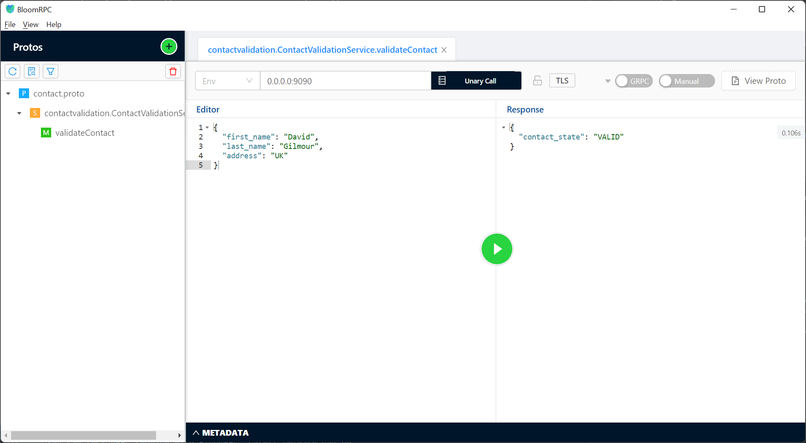

gRPC server side implementation using Spring
2022-02-18This article is describing how to create gRPC service implementation using Spring Boot.
You can find more details about gRPC in “Is gRPC a better choice over REST?”.
To create gRPC service you need to complete 3 tasks:
- Create module for proto model and service definitions.
- Create module with server side implementation of gRPC.
- Test service with BloomRPC.
1. Generation of Proto model and service definition
It will be Maven project. So, first you need to add all necessary dependencies to pom.xml. For generating java source files from .proto file Maven Protocol Buffers Plugin will be used.
<?xml version="1.0" encoding="UTF-8"?>
<project xmlns="http://maven.apache.org/POM/4.0.0" xmlns:xsi="http://www.w3.org/2001/XMLSchema-instance"
xsi:schemaLocation="http://maven.apache.org/POM/4.0.0 https://maven.apache.org/xsd/maven-4.0.0.xsd">
<modelVersion>4.0.0</modelVersion>
<groupId>tech.contactvalidation</groupId>
<artifactId>contact-proto</artifactId>
<version>0.0.1-SNAPSHOT</version>
<name>contact-proto</name>
<description>Project for Proto Model and Service Definitions</description>
<properties>
<java.version>17</java.version>
<project.build.sourceEncoding>UTF-8</project.build.sourceEncoding>
<maven.compiler.source>17</maven.compiler.source>
<maven.compiler.target>17</maven.compiler.target>
</properties>
<dependencies>
<dependency>
<groupId>io.grpc</groupId>
<artifactId>grpc-netty</artifactId>
<version>1.37.0</version>
</dependency>
<dependency>
<groupId>io.grpc</groupId>
<artifactId>grpc-protobuf</artifactId>
<version>1.37.0</version>
</dependency>
<dependency>
<groupId>io.grpc</groupId>
<artifactId>grpc-stub</artifactId>
<version>1.37.0</version>
</dependency>
<dependency>
<groupId>org.apache.tomcat</groupId>
<artifactId>annotations-api</artifactId>
<version>6.0.53</version>
<scope>provided</scope>
</dependency>
</dependencies>
<build>
<extensions>
<extension>
<groupId>kr.motd.maven</groupId>
<artifactId>os-maven-plugin</artifactId>
<version>1.7.0</version>
</extension>
</extensions>
<plugins>
<plugin>
<groupId>org.xolstice.maven.plugins</groupId>
<artifactId>protobuf-maven-plugin</artifactId>
<version>0.6.1</version>
<configuration>
<protocArtifact>
com.google.protobuf:protoc:3.6.1:exe:${os.detected.classifier}
</protocArtifact>
<pluginId>grpc-java</pluginId>
<pluginArtifact>
io.grpc:protoc-gen-grpc-java:1.22.1:exe:${os.detected.classifier}
</pluginArtifact>
<protoSourceRoot>
${basedir}/src/main/proto/
</protoSourceRoot>
</configuration>
<executions>
<execution>
<goals>
<goal>compile</goal>
<goal>compile-custom</goal>
</goals>
</execution>
</executions>
</plugin>
</plugins>
</build>
</project>
Secondly, you need to add .proto file. Protocol buffer language guide.
syntax = "proto3";
package contactvalidation;
option java_package = "tech.contactvalidation";
option java_multiple_files = true;
message ContactValidationRequest {
string first_name = 1;
string last_name = 2;
string address = 3;
}
message ContactValidationResponse {
string contact_state = 1;
}
service ContactValidationService {
rpc validateContact(ContactValidationRequest) returns (ContactValidationResponse) {};
}
Git repo of service definition
2.Server side
pom.xml of server side implementation should contain dependency to the service definition module and other necessary Spring Boot dependencies.
<?xml version="1.0" encoding="UTF-8"?>
<project xmlns="http://maven.apache.org/POM/4.0.0" xmlns:xsi="http://www.w3.org/2001/XMLSchema-instance"
xsi:schemaLocation="http://maven.apache.org/POM/4.0.0 https://maven.apache.org/xsd/maven-4.0.0.xsd">
<modelVersion>4.0.0</modelVersion>
<parent>
<groupId>org.springframework.boot</groupId>
<artifactId>spring-boot-starter-parent</artifactId>
<version>2.5.4</version>
</parent>
<groupId>tech.contactvalidation</groupId>
<artifactId>contact-validation</artifactId>
<version>0.0.1-SNAPSHOT</version>
<name>contact-validation</name>
<description>Contact validation Service</description>
<properties>
<java.version>17</java.version>
</properties>
<dependencies>
<dependency>
<groupId>tech.contactvalidation</groupId>
<artifactId>contact-proto</artifactId>
<version>0.0.1-SNAPSHOT</version>
</dependency>
<dependency>
<groupId>net.devh</groupId>
<artifactId>grpc-server-spring-boot-starter</artifactId>
<version>2.12.0.RELEASE</version>
</dependency>
<dependency>
<groupId>org.springframework.boot</groupId>
<artifactId>spring-boot-devtools</artifactId>
<scope>runtime</scope>
<optional>true</optional>
</dependency>
<dependency>
<groupId>org.springframework.boot</groupId>
<artifactId>spring-boot-starter-test</artifactId>
<scope>test</scope>
</dependency>
</dependencies>
<build>
<plugins>
<plugin>
<groupId>org.springframework.boot</groupId>
<artifactId>spring-boot-maven-plugin</artifactId>
</plugin>
</plugins>
</build>
</project>
To start up an application you need to add only 2 classes. Simple Spring Boot application class for lunching an app.
@SpringBootApplication
public class Application {
public static void main(String[] args) {
SpringApplication.run(Application.class, args);
}
}
And Service class with @GrpcService annotation that extends your generated ServiceImplBase.
@GrpcService
public class ContactValidationService extends ContactValidationServiceGrpc.ContactValidationServiceImplBase {
@Autowired
private ContactService contactService;
@Override
public void validateContact(ContactValidationRequest request, StreamObserver<ContactValidationResponse> responseObserver) {
String state = contactService.validateContact(request);
ContactValidationResponse response = ContactValidationResponse.newBuilder().setContactState(state).build();
responseObserver.onNext(response);
responseObserver.onCompleted();
}
}
Git repo of server side gRPC implementation
3.Testing
You can test gRPC service with BloomRPC. Latest release can be downloaded from here. Simply add your .proto file to BloomRPC and you are ready to test.
